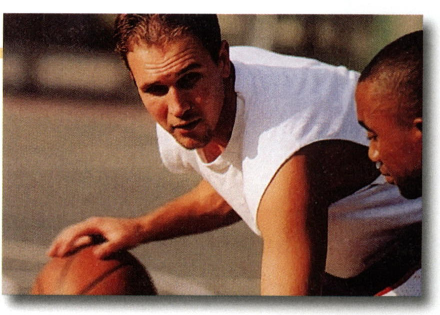
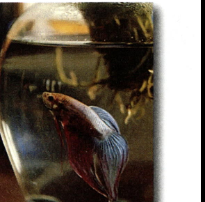
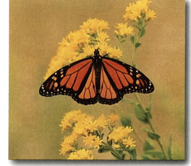
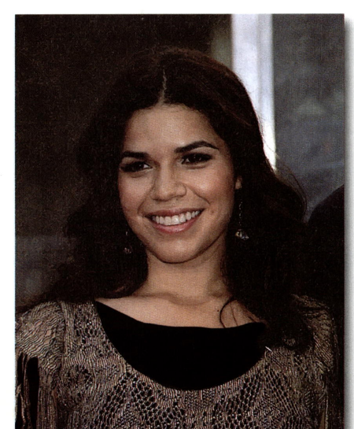

Chapter 3: Every Picture Tells a Story (pp. 45–54)
When you look at a picture of someone new, you know some things about that person, but not everything. You can use your imagination to create a story about the person's life. Your imagination is your ability to form new ideas or pictures in your mind. In this chapter, you will use your imagination to write about a person in a photo.
Two students used their imaginations to write about the man in the photo. They have different ideas about him, so their paragraphs tell different stories about his life.
Work with a partner or in a small group. Read the models. Then answer the questions.
✏️ Writing Model 1
The man in the photo is a hardworking man. His name is Ryan Murphy. He lives in Dallas, Texas. He is single. He lives with his two brothers. Ryan works in a factory. He works the second shift five days a week. He does not like this job. He wants a better job, so he goes to school. He is a part-time college student. He has classes three mornings a week. His classes are not easy. He works hard in school. In his free time, Ryan goes running and works out. On weekends, he plays basketball with friends. He leads a busy life.

Questions about the Model
the man in the photo, Ryan Murphy
Ryan Murphy is hardworking.
He has a job and he goes to school, too. His classes are not easy. He works hard in school.
Sentences b and e.
Sentences a, c, and d.
✏️ Writing Model 2
The man in the photo has an exciting life. His name is Victor Torres. He lives in Hollywood. He is married. He and his wife do not have children. Victor works in the movie business and makes a lot of money. He drives a new Mercedes. He and his wife have a great house at the beach. It has a basketball court in the backyard. In his free time, Victor and his wife go fishing. They go to parties with famous people. They go shopping in Beverly Hills. Victor does not have any big worries. He is a lucky man.
Questions about the Model
the man in the photo, Victor Torres
He has an exciting life.
He works in the movie business. He makes a lot of money. He drives a new Mercedes. He has a house at the beach. He goes to parties with famous people.
Writers need to make their paragraphs easy for readers to understand. One way to help the reader is to use a topic sentence.
A topic sentence comes at the beginning of a paragraph. The topic sentence gives the writer's main idea about the topic. A good topic sentence helps readers understand the paragraph.
The Parts of a Topic Sentence
A topic sentence has two parts:
- a topic—what the paragraph is about, and
- a controlling idea—what the writer is going to focus on in the paragraph.
This topic sentence tells the reader that the paragraph will be about David Freeman. It will be about David as a father. The paragraph will not have other information about David. For example, it will not tell the reader about his education, his friends, or his future plans.
Either the topic or the controlling idea can come first in a topic sentence. Compare these two topic sentences:
Sometimes the topic and the controlling idea are in two sentences. In this example, the topic is the twin sisters Emma and Alyssa. The controlling idea—that they have different interests—is in the second sentence.
Emma and Alyssa are twins. They look very much alike, but they have different interests. For example, Emma likes to . . .
Not all paragraphs begin with a topic sentence, but topic sentences are an important part of academic writing in English. You will need good topic sentences for paragraphs that you write as a student.
Find the topic sentence of each paragraph. Circle the topic and underline the controlling idea.
The man in the photo has a terrible job. His name is Bob Walker, and he works for Bigg Computers. Every day, customers call him on the phone. They are unhappy about their computers. He does not like to listen to them. Sometimes they get angry, and they yell at Bob. Then he gets angry, too. He needs a new job.
It is easy to make good chocolate chip cookies. Just buy a bag of chocolate chips at the supermarket and look for the recipe on the back. The recipe will list the other ingredients you need. At home, measure the ingredients and mix them to make the cookie dough. Put the dough into the refrigerator and wait for 24 hours. (That is the only hard part—waiting!) Follow the instructions to bake the cookies. The last step is the easiest part of all: eating the cookies warm from the oven.

A betta makes a good pet for several reasons. First, it is a beautiful fish, especially in the sunlight. The light brings out its amazing color. Second, it is easy to take care of a betta. Just feed it every day, and give it clean water once a week. Finally, a betta is not expensive. You do not have to spend much money on the fish, its food, or its fishbowl. I tell all my friends to get a betta.
My five-year-old nephew is a very funny little boy. I like to listen to him sing along with the radio. He often gets the words wrong. Sometimes he does it by mistake, and sometimes he does it on purpose, to make me laugh. I enjoy spending time with my funny little nephew.
Work alone or with a partner. Read each paragraph and the three sentences that follow it. Choose the best topic sentence for the paragraph and write it on the line.
"My friend Kai is good at sports." He was the captain of two sports teams at our high school. He was our best wrestler and our best tennis player. He is also a good swimmer and a fast runner. He runs every day to stay in shape. Sometimes Kai and I play ping-pong together. Kai usually wins. He is good at ping-pong, too.
- a. Kai is a great friend.
- b. My friend Kai and I like sports.
- c. My friend Kai is good at sports. ✓ correct

A monarch butterfly
"Some butterflies are great travelers." For example, butterflies called Painted Ladies fly all the way from Europe to Africa. They also fly from Australia to New Zealand. Monarch butterflies fly from Canada to Mexico. That trip can be 3,000 miles long. It is amazing how far some butterflies can fly.
- a. Butterflies are beautiful.
- b. Some butterflies are great travelers. ✓ correct
- c. Butterflies live in many parts of the world.
"Photos are important to me." I like to have photos of family and friends to look at. I live far away from many of them now, and I miss them. The photos remind me of good times together. I also have many photos of my daughters growing up. It makes me happy to look at these photos and remember when my girls were babies. My daughters like to look at their old photos, too. The photos are fun for us to talk about.
- a. Photos are important to me. ✓ correct
- b. Everyone needs a good camera.
- c. Taking pictures can be quick and easy.

TV and movie star America Ferrera
"I admire America Ferrera for several reasons." First, I admire her because she has many talents. She is a very good actor. Second, she is also a movie producer, so I think she is smart. Finally, she seems like a good person. She visits schools to talk to teenagers about the value of education. She also talks about good health care for all women. I respect her ideas and her work. I hope she has a great career.
- a. America Ferrera is an unusual woman.
- b. I admire America Ferrera for several reasons. ✓ correct
- c. America Ferrera was in the TV series Ugly Betty.
Topic Sentences and Titles
Each paragraph you write for a Writing Assignment in this book should have a title. The title and the topic sentence both help the reader understand what the paragraph will be about.
A title is usually not a complete sentence, and it does not do the job of a topic sentence. The topic sentence, not the title, has the topic and the controlling idea for the paragraph.
A topic sentence cannot refer back to the title, so sometimes the topic sentence must repeat words from the title. Do not begin a topic sentence with He or She, even when the person's name is in the title.
Gustavo's Favorite Day
He likes Saturdays because he can sleep in. He . . .
Gustavo's Favorite Day
Saturday is Gustavo's favorite day of the week. He likes Saturdays because. . .
Underline the topic sentence in each paragraph. Choose the best title for that paragraph and write it on the line.
Why I Like Classroom Discussions
I enjoy classroom discussions for several reasons. For example, I like to hear my classmates talk. There are some interesting people in my class, and I like to hear their ideas and opinions. I also like to practice speaking English. Classroom discussions help me learn to speak better. They make time in class go by faster, too. These are just a few of the reasons why discussions make classes more interesting.
- a. My English Class
- b. Speaking English in Class
- c. Why I Like Classroom Discussions ✓ correct (title already shown above)
Everyone in my family loves music. We listen to music all the time. My parents like classical music and pop. My sisters like popular music, and they love to sing karaoke. My brother likes classic music and plays guitar in a music band. I like all these kinds of music at different times. People in my family sometimes argue about music, for example in the car, but we all agree on one thing. Life is better with music.
- a. Music in My Life
- b. A Family of Music Lovers ✓ correct
- c. The Importance of Music
Bicycling is a smart form of transportation. A bicycle is inexpensive, so everyone can afford to own and ride one. Bicycles are quiet and clean, unlike cars or buses. Also, riding a bicycle is good exercise, and most people today need more exercise. More people should try bicycling to school or work. It is the smart way to get where you are going.
- a. The Smart Way to Go ✓ correct
- b. The Sport of Bicycling
- c. Owning a Bicycle
My sister Anna is a very outgoing person. She loves to be with people, and she loves to talk. She has many friends, and she is on the phone with them all day long. She is happy to meet new people, too. She makes friends easily. She is never shy. She has a warm and friendly nature, and I am happy that she is my sister.
- a. A Very Outgoing Person
- b. My Sociable Sister ✓ correct
- c. My Sister and I
Work alone or with a partner. Circle the topic and underline the controlling idea in each topic sentence. Then write two sentences you might find in that paragraph. Write a possible title for the paragraph.
There are interesting things to do, like going to restaurants, movies, and clubs.
You can meet many new people in cities.
Possible Title: The Benefits of City Living
Cities usually have air pollution. They are noisy.
They are expensive. There is crime.
Possible Title: The Difficulties of City Living
You can be messy or noisy if you want.
You can organize things the way you want. You do not need to share things.
Possible Title: A Great Way to Live
You can get lonely.
You have to do all the cleaning.
Possible Title: No Way to Live
It is hard to pronounce a new language.
It is hard to remember new words.
Possible Title: The Challenges of Learning a New Language
It can be fun to learn. You can meet and talk to new people.
Knowing another language can help you get a good job.
Possible Title: The Benefits of Learning a New Language